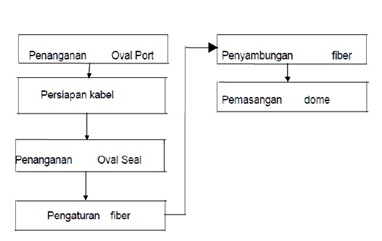
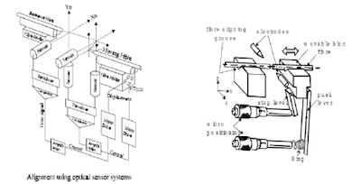

Artikel
penyambungan fiber optic
Penyambungan Kabel Fiber Optik
Dalam jaringan kabel titik rawan gangguan terletak pada titik sambungan,karna pengaruh dari luar seperti masuknya air ke dalam closure. Dalam jangkawaktu yang panjang 5 s/d 10 tahun akan menyebabkan turunnya karakteristik kabel, demikian juga akan menyebabkan rugu-rugi optik bertambah besar. Selain faktor air yang akan mempengaruhi kualitas jaringan juga factor mekanis seperti tegangan yang berlebihan serta bending radius.Tujuan penyambungan kabel optik secara umum adalah untuk menyambung 2 buah kabel serat optik sesuai dengan prosedur yang benar sehingga mempunyai rugi-rugi sekecil mungkin. Prosedur penyambungan serat optik adalah sebagai berikut :
1.Penyambungan kabel serat optik harus sesuai prosedur
2.Penggunaan material dan peralatan harus benar
3.Pemasangan saran sambung kecil kabel harus sesuai petunjuk pelaksanaan
4.Pengetesan harus dilakukan sesuai penyambungan
5.Kesemuanya harus dlaksanakan dengan baik dan benar untuk mendapatkan hasil yang optimal.
Proses penyambungan kabel serat optik meliputi:
a.Penyambungan Kabel.
b.Penyambungan Serat.
Prosedure Penyambungan Serat

Splicing Set-Up
Splicing set up ini persiapan-persiapan yang perlu dilakukan sebelum melakukan penyambungan kabel fiber optic:
1.Bersihkan diseputar lokasi penyambungan.
2.Kupas buffer tubes dan bersihkan dengan jelly cleaner.
3.Ambil Fibrlok splice dan tempatkan pada splice holding.
4.Posisikan lengan penjepit / penyimpan fiber (toggle arms) sesuai peruntukan.Untuk fiber dengan diameter coating 250 μm, putar kearah dalam.Untuk fiber dengan diameter coating 900 μm , putar kearah luar.
Persiapan Fiber
Persiapan kabel fiber optik yang akan digunakan mulai dari pengupasan sampai pemotongan kabel fiber optik:
1.Kupas coating sepanjang + 25 mm s/d 51 mm menggunakan mechanicalstripper.
2.Bersihkan bare fiber menggunakan tissue alkohol.
3.Untuk jenis Fibrlok II 2529 Universal Splice, potong fiber menggunakan fiber cleaver sepanjang 12,5 mm + 0,5 mm, baik untuk diameter coating 250 μm maupun 900 μm.
4.Periksa panjang potongan fiber menggunakan pengukur panjang potonganfiber 12,5 mm yang ada pada Fibrlok Assembly.
5.Apabila panjang bare fiber tidak sesuai, lakukan pengaturan panjang potongan fiber pada fiber cleaver.
Penyambungan Fiber
Langkah-langkah melakukan splicing atau penyambungan kabel fiber optik setelah persiapan dengan menggunakan alat yaitu Splicer :
1. Tempatkan fiber pertama pada tempat penyimpanan fiber dengan caramenjepitkan fiber pada penggenggam panjang coating dari bare fiber +6 mm.
2. Masukkan ujung fiber pertama dengan cara mendorong ke dalam Fibrlok Splice sampai berhenti.
3. Lakukan hal serupa untuk sisi yang lain (fiber kedua).
4. Masukkan ujung fiber kedua dengan cara mendorong ke dalam Fibrlok Splicesampai ujung fiber pertama dan kedua bersentuhan yang ditandai dengan bergeraknya pada fiber pertama.
5. Setelah kedua ujung fiber bersentuhan, dorong fiber pertama kearah fiberkedua sekali lagi sampai fiber kedua bergerak.
6. (Hal ini untuk meyakinkan bahwa kedua ujung fiber benar-benar salingbersentuhan).
7. Lakukan pengepresan dengan cara menekan Handle (pada Fibrlok AssemblyTool) kebawah sampai fibrlok splice berbunyi.
Pengaturan Fiber Kedalam Tray
Yang perlu diperhatikan pada saat pengaturan sambungan fiber ke dalamTray:
1.Setelah selesai penyambungan, angkat Fibrlok Splice dari Assembly Tool danmasukkan ke dalam Tray.
2.Saat mengatur serat kedalam tray, perhatikan bending radius serat tidak bolehkurang dari 3 cm.
3.Hindari terjadinya puntiran pada serat.
4.Tata cara pengaturan serat kedalam tray ini juga berlaku untuk penyambungan serat dengan fusion.
Penyambungan Serat Optik
Dalam penyambungan serat ada 2 cara:
1.Secara fusion (peleburan).
2.Secara mekanik
Fusion Splicing
Teknik penyambungan fiber optik untuk menyambung 2 fiber secara permanen dan rugi rugi penyambungan kecil harus memakai fusion splicer.
Bagian Bagian Fusion Splicing
Berikut bagian-bagian dalam fusion splicing:
1.Struktur fusion splicer.
2.Proses fusion splicing.
3.Kualitas sambungan.
4.Perkiraan fusion splicing.
5.Pemeliharaan fusion splicer.
Struktur Fusion Splicer
Berikut adalah struktur yang dimiliki fusion splicer:
1.Alur v dan klem.
2.Mikro positioned dan sensor.
3.Elektroda.
4.Sistem sensor yang berisi kaca dan lensa.
Fungsi dari masing-masing yang akan memadukan terjadinya proses penyambungan.
